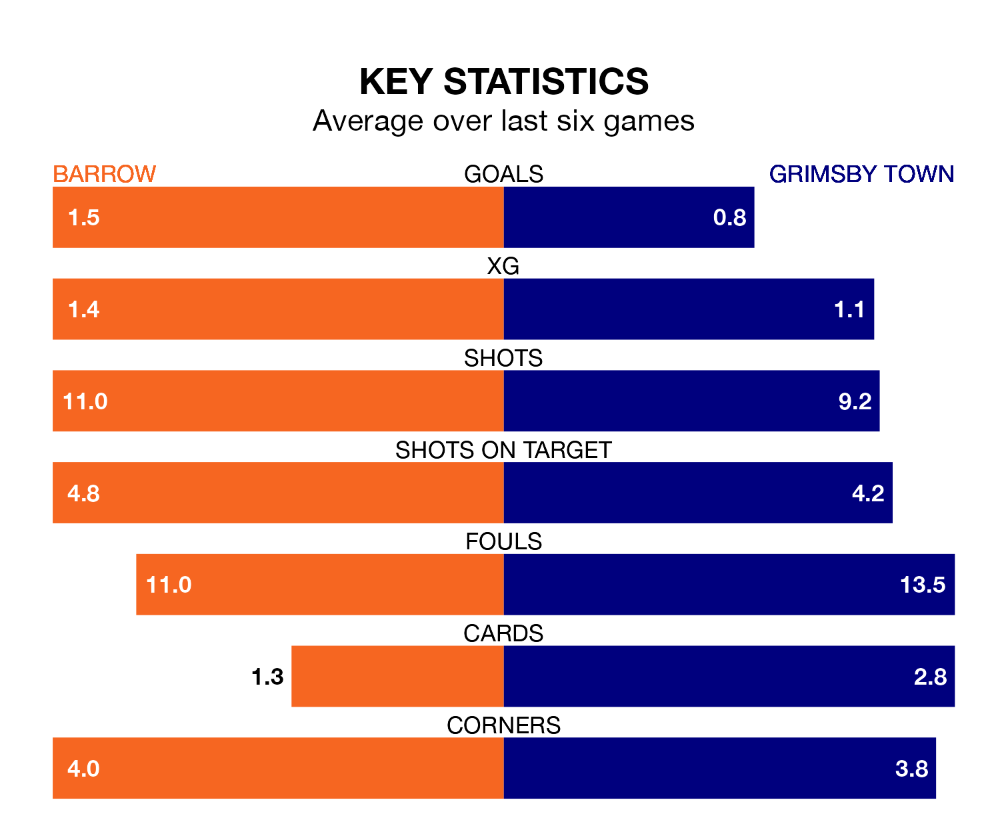

Barrow face Grimsby Town on Friday seeking to protect their long unbeaten run in EFL League Two.
The Bluebirds are unbeaten in five, with three wins and two draws, ahead of the 3pm kick-off.
They face a Grimsby team who have won one and drawn three over the same number of games.
With Paul Farman between the sticks, Barrow can rely on one of the league's safest pair of hands. He has kept 14 clean sheets in his 36 appearances this season, and only one other 'keeper – AFC Wimbledon's Alex Bass – has been able to prevent the opposition scoring on more occasions in EFL League Two.
In Grimsby's net, Harvey Cartwright has five clean sheets in 23 games. He has conceded a goal every 54 minutes, 60% more often than the 88 minutes between goals for Farman.
In the last 10 years, Barrow and Grimsby have played each other on seven occasions. Barrow won one of them and Grimsby the other.
On average, the Bluebirds scored 0.6 goals and the Mariners 1.7 in those matches.
Their last meeting was on October 3, when Grimsby won 2-1 at home.
Town are 21st in the table after 38 games, of which they have won eight and drawn 15, earning 39 points.
The Bluebirds are 15 places ahead of the Mariners in sixth, with 17 wins and 13 draws putting them on 64 points.
With 49 goals in 38 games so far this season, the visitors are scoring at below the league average rate with 1.3 goals per game. And they are conceding more than average, letting in 65 goals at a rate of 1.7 per game.
The home side are also below average scorers, with 1.4 goals per game, compared to a league average of 1.5. They have conceded 1.1 goals per game.
Barrow's last match was on Saturday, a 1-0 win against Newport County, with Cole Stockton getting the goal for the Bluebirds.
Grimsby lost 3-1 against Wrexham last time out, also on Saturday, with Arthur Gnahoua on the scoresheet.
Updated: 12:16 (UTC), 25/03/24